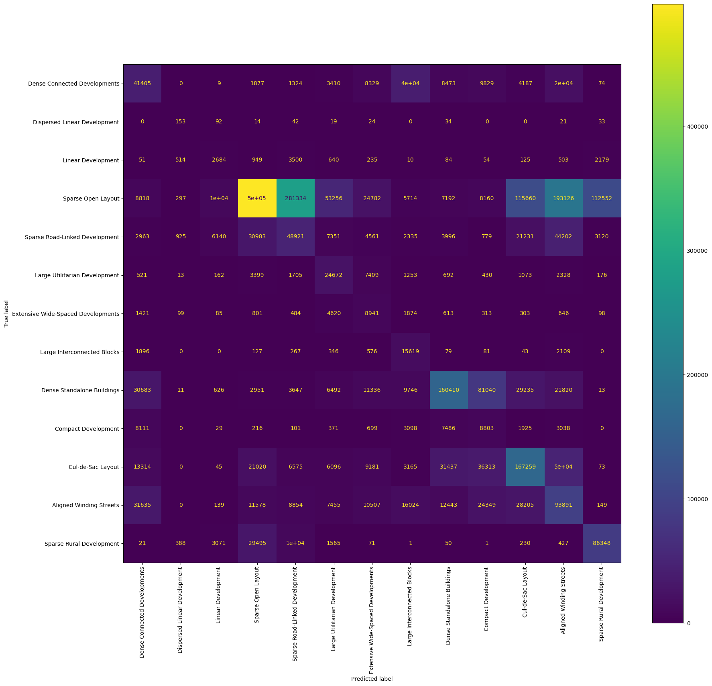

import glob
import geopandas as gpd
import matplotlib.pyplot as plt
import numba
import numpy as np
import pandas as pd
from libpysal.graph import read_parquet
from sklearn.preprocessing import PowerTransformer, RobustScaler, StandardScaler
from sklearn.ensemble import RandomForestClassifier
from core.utils import used_keys
from palettable.colorbrewer.qualitative import Set3_12
from sklearn.metrics import davies_bouldin_score, f1_score
from sklearn.model_selection import GridSearchCV
from sklearn.calibration import CalibratedClassifierCV
from sklearn.ensemble import RandomForestClassifier
from sklearn.datasets import make_moons
from sklearn import model_selection
from sklearn.metrics import accuracy_score, balanced_accuracy_score, make_scorerEurofab model training
v = 'v3'Read the training data, groups and labels
%%time
X_train = pd.read_parquet('/data/uscuni-eurofab/processed_data/train_test_data/training_data4.pq')
y = pd.read_parquet('/data/uscuni-eurofab/processed_data/train_test_data/training_labels4.pq')
groups = pd.read_parquet('/data/uscuni-eurofab/processed_data/train_test_data/training_hexagons4.pq')CPU times: user 2min 14s, sys: 1min 58s, total: 4min 12s
Wall time: 36 sX_train.shape(42428296, 288)Map the labels to the appropriate aggregation level
cluster_mapping = pd.read_parquet(f'/data/uscuni-ulce/processed_data/clusters/cluster_mapping_{v}.pq')
# level_cut = cluster_mapping[3].astype(str)
# level_cut[level_cut == '2'] = '8'
# # assign outliers to the industrial cluster
level_cut = cluster_mapping[4].astype(str)
level_cut[level_cut == '3'] = '15'
level_cut[level_cut == '4'] = '15'
level_cut[level_cut == '10'] = '15'has_building = ~y.index.str.split('_').str[-1].str.startswith('-')
X_train = X_train[has_building]
y = y[has_building]
assert y.final_without_noise.isna().sum() == 0
assert (y.final_without_noise == -1).sum() == 0
assert (X_train.index == y.index).all()
y.shape(42401155, 1)%%time
y['final_without_noise'] = y['final_without_noise'].map(level_cut.to_dict())
y['final_without_noise'].value_counts()CPU times: user 1.07 s, sys: 136 ms, total: 1.21 s
Wall time: 1.21 sfinal_without_noise
13 6813289
8 6295811
6 5301297
14 5300532
7 4771033
5 3735265
1 3539360
9 2681766
12 1947367
11 684150
15 621822
16 547780
2 161683
Name: count, dtype: int64Undersample and Predict only building classification, so drop empty ETCs.
#sample class size, based on the smallest class
# sample_size = y['final_without_noise'].value_counts()[-1] - 1000
# sample class size fixed value
sample_size = 200_000
sample_size200000%%time
np.random.seed(123)
train_indices = []
classes = y.final_without_noise.unique()
has_building = ~y.index.str.split('_').str[-1].str.startswith('-')
# prague_only = y.index.str.startswith('65806')
for cluster in classes:
random_indices = np.random.choice(np.where((y.final_without_noise == cluster) & (has_building))[0], sample_size, replace=False, )
train_indices.append(random_indices)
train_indices = np.concat(train_indices)CPU times: user 36.6 s, sys: 1.81 s, total: 38.4 s
Wall time: 38.4 s# array([12239990, 1465214, 19863794, ..., 37780729, 36737940, 39044928])
train_indicesarray([42027531, 1719710, 4010671, ..., 28697031, 30891194, 26758311])# # limit to prague only
# X_train = X_train[X_train.index.str.startswith('65806')]
# y = y[y.index.str.startswith('65806')]
# groups = groups[groups.index.str.startswith('65806')]X_train = X_train.iloc[train_indices]
y = y.iloc[train_indices]
groups = groups.iloc[train_indices]
assert y.final_without_noise.isna().sum() == 0X_resampled, y_resampled = X_train, y%%time
from imblearn.under_sampling import RandomUnderSampler
rus = RandomUnderSampler(random_state=0)
X_resampled, y_resampled = rus.fit_resample(X_train, y.final_without_noise)CPU times: user 1min 14s, sys: 1.18 s, total: 1min 16s
Wall time: 1min 16sX_resampled.shape(2101879, 288)# %%time
# # random sample
# np.random.seed(123)
# train_indices = np.random.choice(np.arange(len(X_train)), size=20_000_000, replace=False)
# X_train, y = X_train.iloc[train_indices], y.iloc[train_indices].final_without_noise
# X_resampled, y_resampled = X_train, y
# train_indicesCPU times: user 33.7 s, sys: 1.18 s, total: 34.9 s
Wall time: 34.8 sarray([41275768, 26335779, 1263004, ..., 147368, 31353073, 28249475])Kfold
Setup kfold splitter based on spatial contiguity
gkf = model_selection.StratifiedGroupKFold(n_splits=5)
splits = gkf.split(
X_train.values,
y.final_without_noise.values,
groups=groups.hexagons.values,
)
scoring = {"Balanced Accuracy": make_scorer(balanced_accuracy_score), "Accuracy": make_scorer(accuracy_score)}factorize_y = y.final_without_noise.factorize()Setup grid search and evaluation pipeline
# calibrated_forest = CalibratedClassifierCV(
# estimator=RandomForestClassifier(random_state=123, n_jobs=-1))
# param_grid = {
# 'estimator__max_depth': [2, 4, 6, 8, 20],
# # 'estimator__max_depth': [2, 4, 6],
# 'estimator__min_samples_split': [2, 50, 100, 200, 400]
# # 'estimator__min_samples_split': [200, 400]
# }
# search = GridSearchCV(calibrated_forest, param_grid, cv=splits, scoring=scoring, refit="Accuracy", return_train_score=True)
# search.fit(
# X_train.values,
# factorize_y[0]
# )import xgboost%%time
from xgboost import XGBClassifier
xgb_model = XGBClassifier(nthread=1, learning_rate=0.02, n_estimators=600,)
search = GridSearchCV(
xgb_model,
{
'min_child_weight': [1, 5, 10],
'gamma': [0.5, 1, 1.5, 2, 5],
'subsample': [0.6, 0.8, 1.0],
'colsample_bytree': [0.6, 0.8, 1.0],
'max_depth': [3, 4, 5]
},
verbose=1,
n_jobs=-5,
cv=splits,
scoring=scoring,
refit="Accuracy",
return_train_score=True
)
search.fit(
X_train.values,
factorize_y[0]
)Fitting 5 folds for each of 405 candidates, totalling 2025 fits
CPU times: user 3h 25s, sys: 1h 4min 10s, total: 4h 4min 36s
Wall time: 16d 20h 23min 5sGridSearchCV(cv=<generator object _BaseKFold.split at 0x7abecaac6680>,
estimator=XGBClassifier(base_score=None, booster=None,
callbacks=None, colsample_bylevel=None,
colsample_bynode=None,
colsample_bytree=None, device=None,
early_stopping_rounds=None,
enable_categorical=False, eval_metric=None,
feature_types=None, gamma=None,
grow_policy=None, importance_type=None,...
param_grid={'colsample_bytree': [0.6, 0.8, 1.0],
'gamma': [0.5, 1, 1.5, 2, 5], 'max_depth': [3, 4, 5],
'min_child_weight': [1, 5, 10],
'subsample': [0.6, 0.8, 1.0]},
refit='Accuracy', return_train_score=True,
scoring={'Accuracy': make_scorer(accuracy_score, response_method='predict'),
'Balanced Accuracy': make_scorer(balanced_accuracy_score, response_method='predict')},
verbose=1)In a Jupyter environment, please rerun this cell to show the HTML representation or trust the notebook. On GitHub, the HTML representation is unable to render, please try loading this page with nbviewer.org.
GridSearchCV(cv=<generator object _BaseKFold.split at 0x7abecaac6680>,
estimator=XGBClassifier(base_score=None, booster=None,
callbacks=None, colsample_bylevel=None,
colsample_bynode=None,
colsample_bytree=None, device=None,
early_stopping_rounds=None,
enable_categorical=False, eval_metric=None,
feature_types=None, gamma=None,
grow_policy=None, importance_type=None,...
param_grid={'colsample_bytree': [0.6, 0.8, 1.0],
'gamma': [0.5, 1, 1.5, 2, 5], 'max_depth': [3, 4, 5],
'min_child_weight': [1, 5, 10],
'subsample': [0.6, 0.8, 1.0]},
refit='Accuracy', return_train_score=True,
scoring={'Accuracy': make_scorer(accuracy_score, response_method='predict'),
'Balanced Accuracy': make_scorer(balanced_accuracy_score, response_method='predict')},
verbose=1)XGBClassifier(base_score=None, booster=None, callbacks=None,
colsample_bylevel=None, colsample_bynode=None,
colsample_bytree=1.0, device=None, early_stopping_rounds=None,
enable_categorical=False, eval_metric=None, feature_types=None,
gamma=0.5, grow_policy=None, importance_type=None,
interaction_constraints=None, learning_rate=0.02, max_bin=None,
max_cat_threshold=None, max_cat_to_onehot=None,
max_delta_step=None, max_depth=5, max_leaves=None,
min_child_weight=1, missing=nan, monotone_constraints=None,
multi_strategy=None, n_estimators=600, n_jobs=None, nthread=1,
num_parallel_tree=None, ...)XGBClassifier(base_score=None, booster=None, callbacks=None,
colsample_bylevel=None, colsample_bynode=None,
colsample_bytree=1.0, device=None, early_stopping_rounds=None,
enable_categorical=False, eval_metric=None, feature_types=None,
gamma=0.5, grow_policy=None, importance_type=None,
interaction_constraints=None, learning_rate=0.02, max_bin=None,
max_cat_threshold=None, max_cat_to_onehot=None,
max_delta_step=None, max_depth=5, max_leaves=None,
min_child_weight=1, missing=nan, monotone_constraints=None,
multi_strategy=None, n_estimators=600, n_jobs=None, nthread=1,
num_parallel_tree=None, ...)Select the best model and predict the test data
best_model = search.best_estimator_import pickle
pickle.dump(best_model, open("best_clasif.pkl", "wb"))%%time
from xgboost import XGBClassifier
factorize_y = y.final_without_noise.factorize()
# best_model = XGBClassifier(nthread=-1)
best_model = XGBClassifier(nthread=-1, learning_rate=0.02, n_estimators=600, colsample_bytree=1.0, gamma=0.5, max_depth=5, min_child_weight=1)
best_model.fit(X_train.values, factorize_y[0])CPU times: user 2h 57min 16s, sys: 4.86 s, total: 2h 57min 21s
Wall time: 7min 30sXGBClassifier(base_score=None, booster=None, callbacks=None,
colsample_bylevel=None, colsample_bynode=None,
colsample_bytree=1.0, device=None, early_stopping_rounds=None,
enable_categorical=False, eval_metric=None, feature_types=None,
gamma=0.5, grow_policy=None, importance_type=None,
interaction_constraints=None, learning_rate=0.02, max_bin=None,
max_cat_threshold=None, max_cat_to_onehot=None,
max_delta_step=None, max_depth=5, max_leaves=None,
min_child_weight=1, missing=nan, monotone_constraints=None,
multi_strategy=None, n_estimators=600, n_jobs=None, nthread=-1,
num_parallel_tree=None, ...)In a Jupyter environment, please rerun this cell to show the HTML representation or trust the notebook. On GitHub, the HTML representation is unable to render, please try loading this page with nbviewer.org.
XGBClassifier(base_score=None, booster=None, callbacks=None,
colsample_bylevel=None, colsample_bynode=None,
colsample_bytree=1.0, device=None, early_stopping_rounds=None,
enable_categorical=False, eval_metric=None, feature_types=None,
gamma=0.5, grow_policy=None, importance_type=None,
interaction_constraints=None, learning_rate=0.02, max_bin=None,
max_cat_threshold=None, max_cat_to_onehot=None,
max_delta_step=None, max_depth=5, max_leaves=None,
min_child_weight=1, missing=nan, monotone_constraints=None,
multi_strategy=None, n_estimators=600, n_jobs=None, nthread=-1,
num_parallel_tree=None, ...)%%time
from sklearn.ensemble import HistGradientBoostingClassifier
factorize_y = y.final_without_noise.factorize()
# best_model = XGBClassifier(nthread=-1)
# best_model = XGBClassifier(nthread=-1, learning_rate=0.02, n_estimators=600, colsample_bytree=1.0, gamma=0.5, max_depth=5, min_child_weight=1)
best_model = HistGradientBoostingClassifier()
best_model.fit(X_train.values, y)/home/krasen/morphometrics/.pixi/envs/default/lib/python3.12/site-packages/sklearn/utils/validation.py:1339: DataConversionWarning: A column-vector y was passed when a 1d array was expected. Please change the shape of y to (n_samples, ), for example using ravel().
y = column_or_1d(y, warn=True)CPU times: user 32min 25s, sys: 673 ms, total: 32min 26s
Wall time: 3min 1sHistGradientBoostingClassifier()In a Jupyter environment, please rerun this cell to show the HTML representation or trust the notebook.
On GitHub, the HTML representation is unable to render, please try loading this page with nbviewer.org.
HistGradientBoostingClassifier()
Random Forest
# to_keep = ['ldsAre_15', 'mibERI_15', 'sicCAR_median', 'ldsMSL_15',
# 'ssbERI_15', 'ssbCCM_85', 'sdsSPO_15', 'linWID_85',
# 'sdsSPO_median', 'ldsRea_15', 'sdcLAL_median', 'likWBB_85',
# 'mdcAre_85', 'mdcAre_median', 'mibAre_85', 'mibLAL_85',
# 'mibSCo_85', 'mibFR_85', 'ldsAre_median', 'lcdMes_median',
# 'ldsRea_median', 'ldsMSL_median', 'ldbPWL_85', 'sdcAre_median',
# 'mibLAL_median', 'likWBB_median', 'mibLen_85', 'lddNDe_85',
# 'ldsMSL', 'mtbNDi_median', 'linPDE_median', 'mibElo_15',
# 'mtcWNe_median', 'linWID', 'ssbCCD_85', 'linWID_median',
# 'sdbPer_85', 'ldsRea', 'sdbAre_85', 'lcdMes_85',
# 'sicCAR_15', 'sddAre_median', 'ldsRea_85']to_keep = X_train.columns.values# to_keep = X_train.columns[~X_train.columns.str.contains('_')].values
# to_keep.shape## validate assignments
# rid = '65806'
# res_index = X_resampled.index[X_resampled.index.str.startswith(str(rid))]
# res_index = res_index.str.split('_').str[-1].astype(int)
# res_label = pd.read_parquet(f'/data/uscuni-eurofab/processed_data/target_clusters/{rid}_target.pq').set_index('index').final_without_noise
# res_label = res_label.loc[res_index]
# res_geom = gpd.read_parquet(f'/data/uscuni-eurofab/processed_data/buildings/buildings_{rid}.parquet')
# res_geom = res_geom.loc[res_index]
# res_geom.loc[res_index, 'label'] = res_label
# res_geom['label'] = res_geom['label'].astype(int).map(level_cut.to_dict())
# res_geom.explore(column='label', categorical=True, tiles='cartodb positron')%%time
from sklearn.ensemble import RandomForestClassifier
best_model = RandomForestClassifier(random_state=123, n_jobs=-1,
oob_score=True,
n_estimators=50, max_samples=200_000, max_features=.5, min_samples_leaf=5, )
best_model.fit(X_resampled[to_keep], y_resampled)CPU times: user 44min 53s, sys: 9.53 s, total: 45min 2s
Wall time: 3min 10sRandomForestClassifier(max_features=0.5, max_samples=200000, min_samples_leaf=5,
n_estimators=50, n_jobs=-1, oob_score=True,
random_state=123)In a Jupyter environment, please rerun this cell to show the HTML representation or trust the notebook. On GitHub, the HTML representation is unable to render, please try loading this page with nbviewer.org.
RandomForestClassifier(max_features=0.5, max_samples=200000, min_samples_leaf=5,
n_estimators=50, n_jobs=-1, oob_score=True,
random_state=123)best_model.oob_score_, best_model.score(X_resampled[to_keep], y_resampled)(0.6050162735342995, 0.6608096850484733)# from imblearn.ensemble import BalancedRandomForestClassifier
# brf = BalancedRandomForestClassifier(
# n_estimators=100, max_samples=200_000, max_features=.5, min_samples_leaf=5,
# n_jobs=-1,
# sampling_strategy="all",
# replacement=True,
# bootstrap=False,
# random_state=0,
# verbose=1,
# )
# brf.fit(X_train[to_keep], y.final_without_noise)
# best_model = brfX_test = pd.read_parquet('/data/uscuni-eurofab/processed_data/train_test_data/testing_data4.pq')
y_test = pd.read_parquet('/data/uscuni-eurofab/processed_data/train_test_data/testing_labels4.pq')
# # # limit to vienna only
# X_test = X_test[X_test.index.str.startswith('84986')]
# y_test = y_test[y_test.index.str.startswith('84986')]
y_test['final_without_noise'] = y_test['final_without_noise'].map(level_cut.to_dict())
# accuracy_score(best_model.oob_score, y.final_without_noise)has_building_test = ~y_test.index.str.split('_').str[-1].str.startswith('-')
X_test = X_test[has_building_test]
y_test = y_test[has_building_test]
assert y_test.final_without_noise.isna().sum() == 0
assert (X_test.index == y_test.index).all()
y_test.shape(2846671, 1)# factorize y_test using the same factorization scheme for y_train%%time
predictions = best_model.predict(X_test[to_keep])CPU times: user 37.8 s, sys: 8.77 s, total: 46.6 s
Wall time: 3.93 smapped_predictions = predictions
## use the y_train factorisation scheme to map back the predictions to the original labels
# mapped_predictions = factorize_y[1][predictions]cluster_4_names = {'1': 'Dense Connected Developments',
'2': 'Large Interconnected Blocks',
'3': 'Extensive Courtyard Complexes',
'4': 'Massive Connected Aggregations',
'5': 'Dense Standalone Buildings',
'6': 'Compact Development',
'7': 'Cul-de-Sac Layout',
'8': 'Aligned Winding Streets',
'9': 'Sparse Rural Development',
'10': 'Large Wide-Spaced Complexes',
'11': 'Dispersed Linear Development',
'12': 'Linear Development',
'13': 'Sparse Open Layout',
'14': 'Sparse Road-Linked Development',
'15': 'Large Utilitarian Development',
'16': 'Extensive Wide-Spaced Developments'}# cluster_3_names = {
# '1': 'Central Urban Developments',
# '3': 'Dense Urban Developments',
# '4': 'Street-aligned Developments',
# '5': 'Sparse Rural Development',
# '6': 'Linear Road Network Developments',
# '7': 'Sparse Road Network Developments',
# '8': 'Large Scale Developments'
# }# majority class
(y_test.final_without_noise.value_counts() / y_test.shape[0]).max()np.float64(0.4635916830571569)## vienna accuracy is a good predictor of overall austrian accuracy
accuracy_score(mapped_predictions, y_test)0.4010375628233821y_test.value_counts()final_without_noise
13 1319693
5 358010
7 344269
8 245229
14 177507
1 138700
9 132152
15 43833
6 33877
2 21143
16 20298
12 11528
11 432
Name: count, dtype: int64pd.Series(mapped_predictions).value_counts()13 594425
8 423616
14 377315
7 367997
5 233550
9 202469
6 172436
1 143592
15 118635
2 97309
16 87200
12 25522
11 2605
Name: count, dtype: int64f1_score(y_test, mapped_predictions, average='weighted'), f1_score(y_test, mapped_predictions, average='micro'), f1_score(y_test, mapped_predictions, average='macro')(np.float64(0.44309748751826333),
np.float64(0.4010375628233821),
np.float64(0.2915534268241278))f1s_vals = f1_score(y_test, mapped_predictions, average=None)
f1s = pd.Series(
f1s_vals,
index = [cluster_4_names[k] for k in sorted(np.unique(mapped_predictions))]
)
f1sDense Connected Developments 0.293044
Dispersed Linear Development 0.069147
Linear Development 0.146127
Sparse Open Layout 0.512451
Sparse Road-Linked Development 0.176687
Large Utilitarian Development 0.300625
Extensive Wide-Spaced Developments 0.162850
Large Interconnected Blocks 0.259278
Dense Standalone Buildings 0.539817
Compact Development 0.086306
Cul-de-Sac Layout 0.462139
Aligned Winding Streets 0.272353
Sparse Rural Development 0.509370
dtype: float64f1s.mean()np.float64(0.2915534268241278)f1s.sort_values()Dispersed Linear Development 0.069147
Compact Development 0.086306
Linear Development 0.146127
Extensive Wide-Spaced Developments 0.162850
Sparse Road-Linked Development 0.176687
Large Interconnected Blocks 0.259278
Aligned Winding Streets 0.272353
Dense Connected Developments 0.293044
Large Utilitarian Development 0.300625
Cul-de-Sac Layout 0.462139
Sparse Rural Development 0.509370
Sparse Open Layout 0.512451
Dense Standalone Buildings 0.539817
dtype: float64
def rf_feat_importance(m, df):
return pd.DataFrame({'cols':df.columns, 'imp':m.feature_importances_}
).sort_values('imp', ascending=False)
fi = rf_feat_importance(best_model, X_train[to_keep])
fi[:20]| cols | imp | |
|---|---|---|
| 144 | ldsAre_15 | 0.040940 |
| 90 | ssbERI_15 | 0.029266 |
| 138 | ldsMSL_15 | 0.022876 |
| 154 | sdsSPO_median | 0.022412 |
| 226 | sicCAR_median | 0.019557 |
| 153 | sdsSPO_15 | 0.018993 |
| 273 | mibERI_15 | 0.017169 |
| 98 | ssbCCM_85 | 0.016920 |
| 182 | linWID_85 | 0.016726 |
| 205 | sdcLAL_median | 0.016604 |
| 254 | likWBB_85 | 0.015904 |
| 141 | ldsRea_15 | 0.015012 |
| 221 | mdcAre_85 | 0.013637 |
| 266 | mibAre_85 | 0.012506 |
| 284 | mibFR_85 | 0.011797 |
| 287 | mibSCo_85 | 0.011488 |
| 220 | mdcAre_median | 0.011211 |
| 281 | mibLAL_85 | 0.011074 |
| 145 | ldsAre_median | 0.010976 |
| 142 | ldsRea_median | 0.009038 |
to_keep = fi[fi.imp>0.005].cols
len(to_keep)39to_keep.valuesarray(['ldsAre_15', 'ssbERI_15', 'ldsMSL_15', 'sdsSPO_median',
'sicCAR_median', 'sdsSPO_15', 'mibERI_15', 'ssbCCM_85',
'linWID_85', 'sdcLAL_median', 'likWBB_85', 'ldsRea_15',
'mdcAre_85', 'mibAre_85', 'mibFR_85', 'mibSCo_85', 'mdcAre_median',
'mibLAL_85', 'ldsAre_median', 'ldsRea_median', 'lcdMes_median',
'ldbPWL_85', 'mibLAL_median', 'ldsMSL_median', 'likWBB_median',
'sdbPer_85', 'lddNDe_85', 'mibLen_85', 'likWCe_median',
'sdcAre_median', 'linPDE_median', 'mtbNDi_median', 'ldsMSL',
'ssbCCD_85', 'ldsRea', 'mibElo_15', 'ssbSqu_85', 'sicCAR_85',
'linWID'], dtype=object)# check leakeage
# %%time
# df_dom = pd.concat([X_train[to_keep], X_test[to_keep]])
# is_valid = np.array([0]*len(X_train[to_keep]) + [1]*len(X_test[to_keep]))
# m = RandomForestClassifier(random_state=123, n_jobs=-1,
# oob_score=True,
# n_estimators=100, max_samples=200_000, max_features=0.5, min_samples_leaf=25)
# m.fit(df_dom, is_valid)
# rf_feat_importance(m, df_dom)[:6]from sklearn.metrics import ConfusionMatrixDisplay
from sklearn.metrics import confusion_matrix
import matplotlib.pyplot as pltcm = confusion_matrix(y_test, mapped_predictions, )## testing sklearn categorical ordering
cm_vals = cm.sum(axis=0)
pd.testing.assert_series_equal(pd.Series(cm_vals, index = sorted(np.unique(mapped_predictions))).sort_values(ascending=False), pd.Series(mapped_predictions).value_counts(), check_names=False)
cm_vals = cm.sum(axis=1)
pd.testing.assert_series_equal(pd.Series(cm_vals, index = sorted(np.unique(mapped_predictions))).sort_values(ascending=False), y_test.final_without_noise.value_counts(), check_names=False)disp = ConfusionMatrixDisplay(confusion_matrix=cm,
display_labels=[cluster_4_names[k] for k in sorted(np.unique(mapped_predictions))]
)fig,ax = plt.subplots(figsize=(20,20))
disp.plot( xticks_rotation = 'vertical', ax=ax)
Plot predictions
from lonboard import SolidPolygonLayer, Map
from lonboard.basemap import CartoBasemap
from lonboard.colormap import apply_categorical_cmap
from palettable.colorbrewer.qualitative import Set3_12
from core.cluster_validation import get_color# regions_datadir = "/data/uscuni-eurofab/"
# region_hulls = gpd.read_parquet(
# regions_datadir + "regions/" + "ms_ce_region_hulls.parquet"
# )
# region_hulls.explore()region_id = 84986 # vienna
# region_id = 61799 # lindzbuildings = gpd.read_parquet(f'/data/uscuni-eurofab/processed_data/buildings/buildings_{region_id}.parquet')region_vals = y_test.index.str.startswith(str(region_id))
labels = y_test[region_vals].final_without_noise
labels.index = labels.index.str.split('_').str[-1].astype(int)buildings["predicted_label"] = pd.Series(mapped_predictions[region_vals], labels.index.values)
buildings["true_label"] = labels
# drop buildings that are in the ms data, but not in the cadastre
buildings = buildings.dropna()# buildings = buildings[buildings.predicted_label != buildings.true_label]layer = SolidPolygonLayer.from_geopandas(
gdf=buildings[["geometry", "predicted_label", 'true_label']], get_fill_color=get_color(buildings['true_label'].values.astype(int)), opacity=0.15
)/home/krasen/morphometrics/.pixi/envs/default/lib/python3.12/site-packages/lonboard/_geoarrow/ops/reproject.py:97: UserWarning: Input being reprojected to EPSG:4326 CRS
warnings.warn("Input being reprojected to EPSG:4326 CRS")m = Map(layer, basemap_style=CartoBasemap.DarkMatter)from sidecar import Sidecar
sc = Sidecar(title='buildings')
with sc:
display(m)final_colors = get_color(np.arange(0, 20))layer.get_fill_color = final_colors[buildings['predicted_label'].astype(int)]